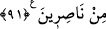

91. Gerçekten, inkâr edip kâfir olarak ölenler var ya, onların hiçbirinden -fidye
olarak dünya dolusu altın verecek olsa dahî- kabul edilmeyecektir. Onlar için acı
bir azap vardır, hiç yardımcıları da yoktur.
“Dünya dolusu altını” fidye vermiş olsalar bile inkâr üzere ölmek, fidye kabulünü
imkânsız kılar. Onun için, “kabul edilmeyecektir” anlamındaki cümlenin başına “fa”
getirilmiştir.
Şayet denilirse ki: “Âyette, kâfirlerden fidye alınmayacağının ifade edilmesi, kıyâmet
günü, onların fidye verebilecekleri altınları olduğunu hatıra getiriyor. Halbuki onların o
gün bırakın dünya dolusu altını, hiçbir şeyleri olmayacak.”
Cevaben şöyle deriz: Âyet-i kerîme, böyle bir şeyin olduğu farz edilerek vârid
olmuştur. Buradaki altın, en değerli şeyden kinâyedir. Bu altının dünya dolusu olması
ise, çok fazla oluşundan kinâyedir. Âyet şöyle düşünülmelidir: “Kâfir, kıyâmet günü,
farazâ çok büyük miktarlara ulaşan son derece değerli bir şeyler bulabilse ve bunları en
değerli isteğine ulaşmak için sarfetme imkânına da sahip olsa bu davranışıyla yine de
Allah’ın azabından kurtulmaya tevessül edemez.” Bu âyet, kâfirlerin kendilerini azaptan
kurtaramayacaklarını açıklamaktadır.
İşte “onlar”; yani zikredilen kötü sıfatlarla muttasıf olanlar için “acıklı bir azap
vardır.” Bu azabı kaldırmak, ya da hafifletmek husûsunda “onların hiçbir yardımcıları
da yoktur.”
Hz. Peygamber (s.a.) şöyle buyuruyor: “Allah Teâlâ kıyâmet gününde,
cehennemliklerin azabı en az olanına şöyle buyuracak: “Senin dünya kadar malın
olsa, kendini kurtarmak için verir miydin?” Cehennemlik “evet” deyince Allah Teâlâ:
“Sen daha Âdem’in sulbünde iken, ben senden bundan çok daha hafif bir istekte;
“bana hiçbir şeyi ortak koşmamak” talebinde bulunmuştum, sen ise ortak koşmaktan
başka bir şey yapmadın” buyuracak.”[63]
İmam Râzî diyor ki: “Kâfirler üç kısımdır:
1. İnkârından sahîh ve makbûl bir tevbe ile dönendir. “Ancak ondan sonra tevbe edip
uslananlar başka. Şüphesiz Allah bağışlayıcıdır, merhametlidir.” (el-Bakara, 2/160)
âyet-i kerîmesinde Allah’ın bahsettiği kâfirler bu gruptakilerdir.
2. Bunlar inkârdan fâsid bir tevbe ile tevbe edenlerdir ki Allah Teâlâ’nın bundan
önceki âyette bahsedip “tevbeleri kabul edilmeyecek” buyurduğu kişiler bu gruptandır.
3. Ölene kadar, inkârından hiçbir şekilde tevbe etmeyenlerdir ki, üzerinde durduğumuz
“inkâr edip kâfir olarak ölenler...” âyet-i kerîmesinde zikredilenler, bu gruptakilerdir.
Bu kişiler, nefs-i emmâreleri kalplerini tamamen istîlâ edip yerleşerek kalplerinin
katılaşmasına sebebiyet verdiği kişilerdir ki bunlar, kötülük ve sapıklığı birbirlerine
yasaklarken, kendileri azgınlık ve inatlarına devam ederler. İşte bunların dünya dolusu